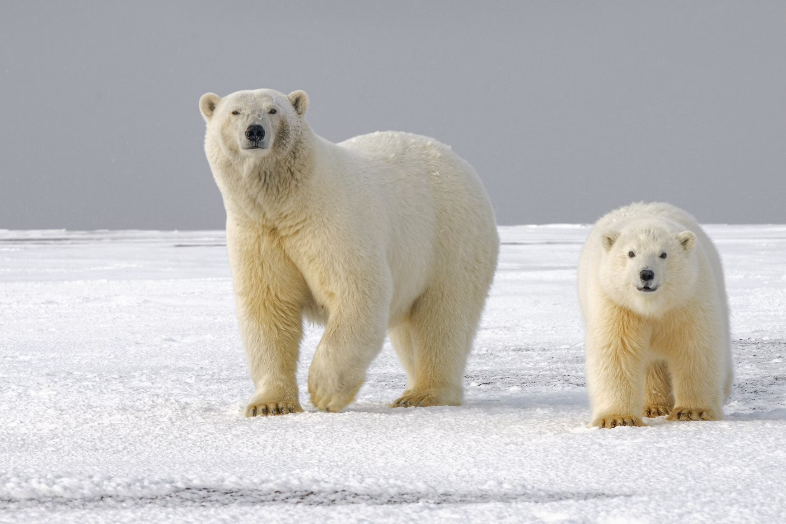

Mission Statement:
Arctic Guardians is a passionate collective of environmental activists committed to safeguarding polar bears and the fragile Arctic ecosystems they call home. Through advocacy, education, and direct action, we strive to raise awareness about the threats facing polar bears and work towards sustainable solutions to preserve their habitats for future generations.
GOALS
| Raise awareness about the impact of climate change, melting ice caps, and habitat loss on polar bear populations. |
| Advocate for stronger environmental policies and conservation measures to protect Arctic habitats |
| Support scientific research and initiatives aimed at studying and preserving polar bear populations. |
| Collaborate with indigenous communities and organizations to incorporate traditional knowledge and practices into conservation efforts. |
| Engage in community outreach, education programs, and fundraising activities to support polar bear conservation projects. |
The Genesis of Arctic Guardians: A Story of Passion and Purpose
Arctic Guardians traces its origins to the remote villages of the Arctic Circle, where Ava Frost, a young environmentalist with a deep reverence for nature, found herself captivated by the majestic presence of polar bears roaming the vast ice fields. Growing up in the midst of changing climate patterns and witnessing the rapid decline of sea ice, Ava felt compelled to take action to protect these iconic creatures and their disappearing habitats.
Driven by her passion and determination, Ava embarked on a journey to raise awareness about the plight of polar bears and the urgent need for conservation efforts. She began by organizing small community gatherings and educational workshops, where she shared stories of her encounters with polar bears and discussed the interconnectedness of climate change, melting ice caps, and the survival of Arctic wildlife.
As Ava's message resonated with more people, she realized the power of collective action in effecting change. Inspired by the support and enthusiasm of fellow activists, scientists, and indigenous elders, Ava founded Arctic Guardians as a platform for grassroots advocacy and environmental stewardship.
The early days of Arctic Guardians were marked by grassroots organizing, outreach campaigns, and collaborative partnerships with local communities and conservation organizations. Ava and her team of volunteers embarked on expeditions to remote Arctic regions, documenting the challenges facing polar bears and gathering data to support their conservation efforts.
One pivotal moment in the organization's history came when Arctic Guardians successfully lobbied for the establishment of a protected marine sanctuary in the Arctic, safeguarding critical feeding grounds and migration routes for polar bears. This landmark achievement galvanized support for the organization and solidified its role as a leading voice for polar bear conservation.
Today, Arctic Guardians continues to grow and evolve, expanding its reach and impact through innovative campaigns, scientific research, and advocacy initiatives. Guided by Ava's vision and fueled by the passion of its members, Arctic Guardians remains steadfast in its commitment to protecting polar bears and preserving the Arctic wilderness for future generations.
As the challenges of climate change intensify and the Arctic landscape undergoes rapid transformation, the work of Arctic Guardians has never been more vital. With unwavering dedication and a shared sense of purpose, the organization stands as a beacon of hope for polar bears and all who call the Arctic home.
"Let us be the guardians of the frozen realm, where every crack in the ice echoes a plea for our action. In the silence of the Arctic, let our voices rise like the northern lights, illuminating the path to a future where polar bears roam free and the ice endures. Together, we hold the power to protect, preserve, and inspire change for generations to come." - Ava Frost
Key Figures:
| Ava Frost: | Erik Nord: | Inuit Elders Council |
|---|---|---|
| Founder and lead activist of Arctic Guardians, a passionate advocate for polar bear conservation. | Wildlife biologist and researcher specializing in polar bear behavior and ecology, serves as a scientific advisor to the group. | Respected indigenous leaders who provide guidance and wisdom based on traditional knowledge of polar bears and Arctic ecosystems |
Through their dedication and activism, Arctic Guardians strive to be a voice for polar bears and a catalyst for positive change in the fight against climate change and habitat destruction in the Arctic.